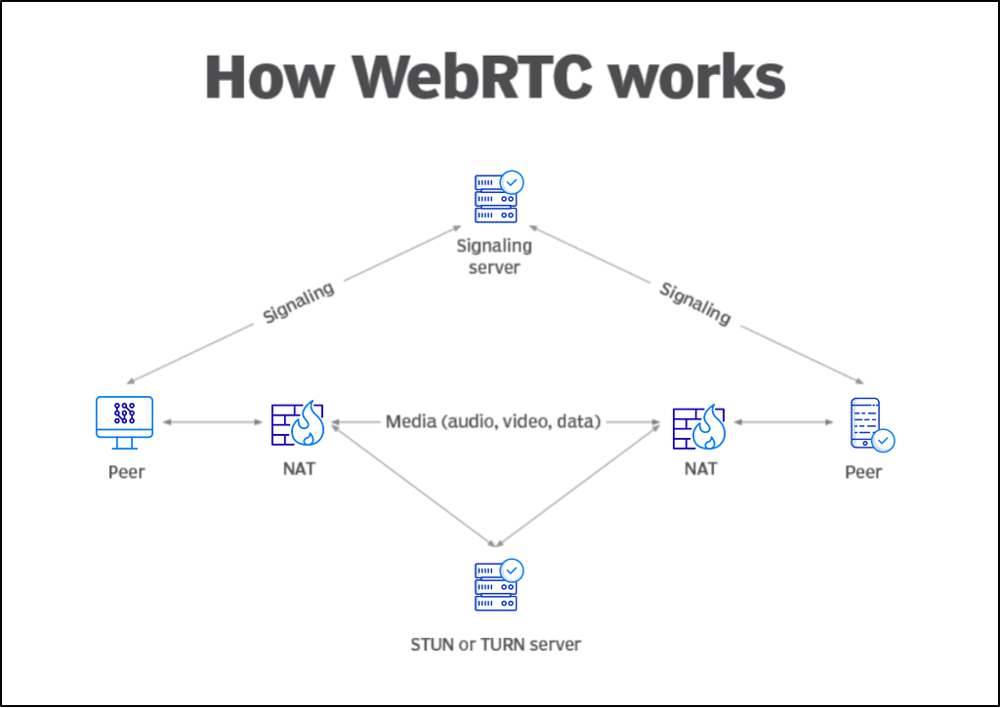
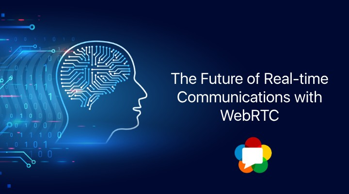

Introduction

WebRTC (Web Real-Time Communication) est une technologie qui permet aux navigateurs et aux applications mobiles de communiquer directement entre eux en temps réel, sans avoir besoin de serveurs intermédiaires. Il permet de passer des appels vidéo, envoyer de l’audio, partager des fichiers et même diffuser son écran, le tout de manière fluide et sécurisée.
Avec WebRTC, plus besoin d’installer de logiciels comme Zoom, Skype ou WhatsApp pour communiquer : tout se fait directement dans le navigateur !
1. Comment fonctionne WebRTC ?
WebRTC repose sur trois composants clés :
- Capture des médias : WebRTC permet d’accéder au microphone, à la caméra et à l’écran d’un appareil.
- Échange de données en P2P (Peer-to-Peer) : La communication se fait directement entre deux appareils sans passer par un serveur central.
- Signalisation et connexion : WebRTC utilise un serveur de signalisation pour établir la connexion entre les utilisateurs avant que la communication ne devienne directe.
2. À quoi sert WebRTC ?

- Appels vidéo et audio : Utilisé par Google Meet, Messenger et WhatsApp.
- Partage d’écran : Présentations en ligne et assistance à distance.
- Jeux en ligne avec chat vocal : Communication entre joueurs en temps réel.
- Transfert de fichiers : Partage direct sans passer par un serveur cloud.
- Télémédecine : Consultation à distance entre patients et médecins.
3. Comment utiliser WebRTC ? (Exemple simple en JavaScript)

Explication du code :
navigator.mediaDevices.getUserMedia({ video: true, audio: true }): Demande l'accès à la caméra et au micro.document.getElementById('video').srcObject = stream;: Affiche le flux vidéo en direct sur la page.- Si l'accès est refusé (l'utilisateur bloque la caméra), une erreur s'affiche dans la console.
4. Avantages de WebRTC
- Gratuit et open-source : Pas de frais de licence, ce qui permet de l’utiliser dans des projets à faible budget.
- Faible latence : Grâce à la connexion peer-to-peer, les échanges se font rapidement.
- Compatibilité avec les navigateurs modernes : WebRTC fonctionne dans la plupart des navigateurs sans plugins.
- Sécurisé : Les communications sont cryptées de bout en bout, garantissant la confidentialité des données.
5. Inconvénients de WebRTC
- Complexité de mise en place : L’implémentation de WebRTC dans une application peut nécessiter des connaissances techniques approfondies.
- Nécessite un serveur de signalisation : WebRTC, en tant que technologie peer-to-peer, a besoin d’un serveur pour faciliter la découverte et l’établissement de connexions entre les utilisateurs (signalisation).
- Problèmes de compatibilité dans des environnements complexes : Certains pare-feu ou réseaux privés peuvent bloquer les connexions WebRTC.
- Peut être gourmand en ressources : En cas d’appels vidéo à haute qualité ou d’un grand nombre de participants, WebRTC peut utiliser beaucoup de bande passante.
6. Alternatives à WebRTC

Voici quelques alternatives à WebRTC pour la communication en temps réel via des applications web, offrant des fonctionnalités similaires tout en ayant des avantages différents.
1. Agora.io
- Description : Agora.io est une plateforme qui offre des API pour intégrer la vidéo, l’audio et la messagerie en temps réel dans les applications. Contrairement à WebRTC, Agora simplifie l’intégration et la gestion de la signalisation et des serveurs.
-
Caractéristiques :
- ✔ API facile à utiliser.
- ✔ Prise en charge de la vidéo, de l’audio et de la messagerie en temps réel.
- ✔ Prise en charge du partage d’écran et des appels de groupe.
- Inconvénient : Service payant, avec un coût qui peut augmenter en fonction de l’utilisation.
2. Twilio
- Description : Twilio est une plateforme cloud permettant d’ajouter des fonctionnalités de communication (audio, vidéo, SMS, messagerie) à vos applications.
-
Caractéristiques :
- ☑ Vidéo et audio en temps réel.
- ☑ API flexible pour l’intégration dans diverses applications.
- ☑ Prise en charge des appels vocaux et vidéo en groupe.
- Inconvénient : Le coût peut être élevé à grande échelle.
3. Daily.co
- Description : Daily.co est une plateforme spécialisée dans la vidéo en temps réel, avec des API pour ajouter facilement des appels vidéo à votre application.
-
Caractéristiques :
- ☑ Vidéo de haute qualité et partage d’écran.
- ☑ Facilité d’intégration via API.
- ☑ Évolutivité pour des appels à grande échelle.
- Inconvénient : Moins de fonctionnalités avancées que des plateformes comme Agora.
4. Jitsi
- Description : Jitsi est une solution open-source permettant de réaliser des appels vidéo et audio en temps réel. Elle offre une plateforme autonome ou peut être intégrée à une application.
-
Caractéristiques :
- ☑ Gratuit et open-source.
- ☑ Prise en charge de la vidéo, de l’audio, et du partage d’écran.
- ☑ Fonctionne directement dans le navigateur.
- Inconvénient : Moins de support professionnel que les solutions payantes.
5. Zoom Video SDK
- Description : Zoom propose un SDK qui permet d’intégrer ses puissantes fonctionnalités de communication vidéo et audio dans des applications.
-
Caractéristiques :
- ☑ Vidéo et audio de haute qualité.
- ☑ Partage d’écran et enregistrement de session.
- ☑ Très bonne scalabilité pour les conférences à grande échelle.
- Inconvénient : Le SDK peut être plus complexe à intégrer pour les développeurs novices.
6. Vonage (anciennement Nexmo)
- Description : Vonage propose des API pour la communication en temps réel (vidéo, audio et messagerie).
-
Caractéristiques :
- ☑ Prise en charge des appels vidéo et audio.
- ☑ API simple à utiliser.
- ☑ Prise en charge de la messagerie instantanée.
- Inconvénient : Tarification basée sur l’utilisation, qui peut augmenter en fonction du volume.
7. WebRTC et l’avenir de la communication en ligne
WebRTC révolutionne les communications en ligne en proposant une alternative aux logiciels classiques. L’avenir de WebRTC inclut :
- Amélioration des codecs pour une meilleure qualité vidéo et audio.
- Gestion avancée du réseau pour éviter les interruptions.
- Intégration avec l’IA pour la traduction et la réduction du bruit.
8. Ressources pour aller plus loin
Conclusion
WebRTC est une technologie puissante qui permet la communication vidéo, audio et le partage de fichiers directement dans le navigateur, sans logiciel supplémentaire. Son efficacité, rapidité et sécurité en font une solution incontournable pour l’avenir des applications web.